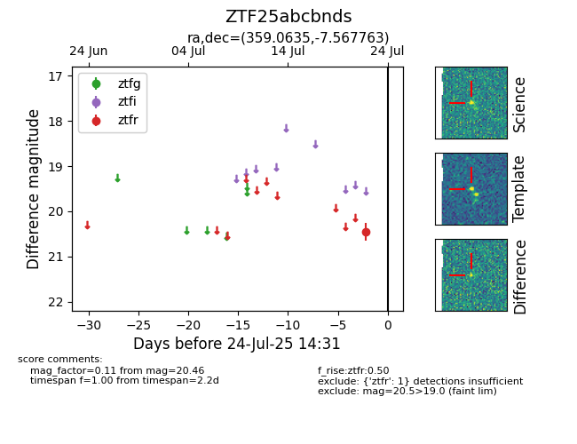

Target ZTF25abcbnds at 2025-07-24 14:31, see:
FINK: fink-portal.org/ZTF25abcbnds
Lasair: lasair-ztf.lsst.ac.uk/objects/ZTF25abcbnds
ALeRCE: alerce.online/object/ZTF25abcbnds
alt names
ZTF25abcbnds (ztf,fink)
coordinates:
equatorial (ra, dec) = (359.0635,-7.56776)
galactic (l, b) = (86.6283,-66.46793)
photometry
last ztfr=20.46
1 ztfr detections
